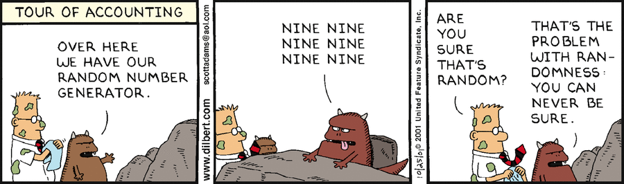

Wonderful Cryptography Quotes
The trouble with quotes on the Internet is that you never know if they are genuine.
— Benjamin Franklin :-)
|
If you reveal your secrets to the wind, you should not blame the wind for revealing them to the trees.
— Kahlil Gibran |
|
A secret between two is a secret of God; a secret among three is everybody's secret.
— French proverb |
|
How long do you want these messages to remain secret? I want them to remain secret for as long as men are capable of evil.
— Neal Stephenson, Cryptonomicon |
|
Computers had their origin in military cryptography.
— Austin Grossman |
|
In God we trust. Everybody else we verify using PGP!
— Tim Newsome |
|
There are two kinds of cryptography in this world: cryptography that will stop your kid sister from reading your files, and cryptography that will stop major governments from reading your files.
— Bruce Schneier |
|
Cryptography is typically bypassed, not penetrated.
— Adi Shamir |
|
Security is a process, not a product.
— Bruce Schneier |
|
Beware of Snake Oil Cryptography.
— Philip Zimmermann |
|
The enemy knows the system.
— Claude Shannon |
|
Don't roll your own Crypto!
— Anonymous |
|
Anyone, from the most clueless amateur to the best cryptographer, can create an algorithm that he(she) himself(herself) can't break.
— Bruce Schneier |
|
Anyone who attempts to generate random numbers by deterministic means is, of course, living in a state of sin.
— John von Neumann |
|
Random numbers should not be generated with a method chosen at random.
— Donald Knuth |
|
The problem of randomness (or people are a poor source of entropy).[1][2]
 |
|
Rule 1 of cryptanalysis: check for plaintext.
— Robert Morris |
|
When in doubt, use brute force.
— Ken Thompson |
|
Your voice is always heard.
— NSA |
|
We kill people based on metadata.
— Michael Hayden (NSA) |
|
If privacy is outlawed, only outlaws will have privacy.
— Philip Zimmermann |
|
I do engineering, not religion.
— Daniel J. Bernstein |
|
"Why Johnny Can't Encrypt" or "On unusability of PGP and other crypto softwares".[3]
|

|
You can’t trust code that you did not totally create yourself.
— Ken Thompson |
|
The danger of rubber-hose cryptanalysis![4]
|

References
- [1] Dilbert Comic Strip on 2001-10-25
- [2] Hacker News discussion
- [3] xkcd: Public Key
- [4] xkcd: Security